← 返回阅读库 · 原论文目录
论文讲解阅读文档 · 论文精读 · v250
梁圣亲自挂帅！V4超级Buff全解析！DSpark
视频时长 00:10:39；讲解文字 3,717 字符；提取讲解画面 200 张。按视频原顺序阅读，每段文字保留时间戳。
文字来自整段视频的自动语音转写，按自然停顿分段，并与 PPT / 论文页面 / 演示画面对齐。未将讲解压缩为摘要；术语、数字和口述公式请结合画面及原论文核对。 阅读稿已校正规范部分明确术语误识别；原始逐字稿和每处修改记录另行保留。
讲解画面为源视频截图（638×360），不是可编辑 PPT 文件。全片按每秒 2 帧扫描内容变化，逐步展开页保留；连续动画保留代表画面。清晰度受源视频限制。
下载完整资料包 · 含离线 HTML、PDF、Word、全部 PPT 画面和字幕。
原论文与材料
DSpark: Confidence-Scheduled Speculative Decoding with Semi-Autoregressive Generation · 下载完整 PDF（33 页）
按时间阅读
00:00:00–00:00:02 · 画面 001
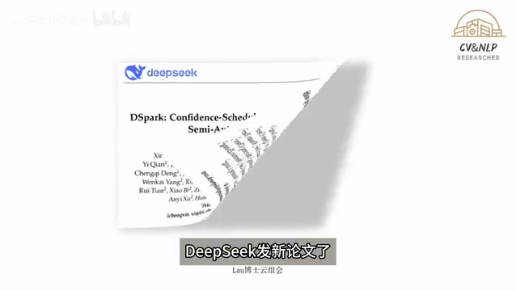
00:00:00–00:00:02 · 画面 001DeepSeek 发新论文了，梁文峰亲自作证，通讯作者训练代码全栈开源，单用户速度提升 85%高并发场景有效吞吐量翻 4 倍。连 Fireworks 的 AI CTO ，PyTorch 的核心维护者 Dimitro 都自发给他写解读博客。今天六博士就结合大佬 Dimitro 的博客和论文原文，和大家一起拆解这项重磅研究，云组绘论文精读系列：大模型推理超级加速 DSpark。
00:00:02–00:00:06 · 画面 002
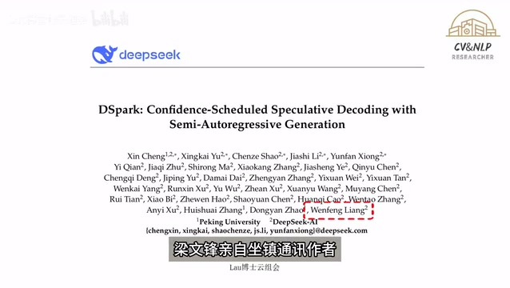
00:00:02–00:00:06 · 画面 00200:00:06–00:00:09 · 画面 003
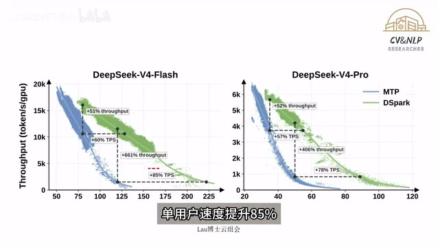
00:00:06–00:00:09 · 画面 00300:00:09–00:00:13 · 画面 004
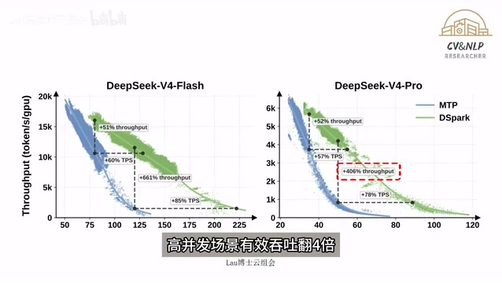
00:00:09–00:00:13 · 画面 00400:00:13–00:00:15 · 画面 005
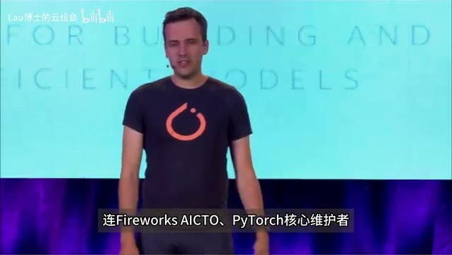
00:00:13–00:00:15 · 画面 00500:00:15–00:00:19 · 画面 006
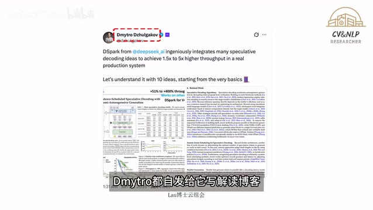
00:00:15–00:00:19 · 画面 00600:00:19–00:00:23 · 画面 007
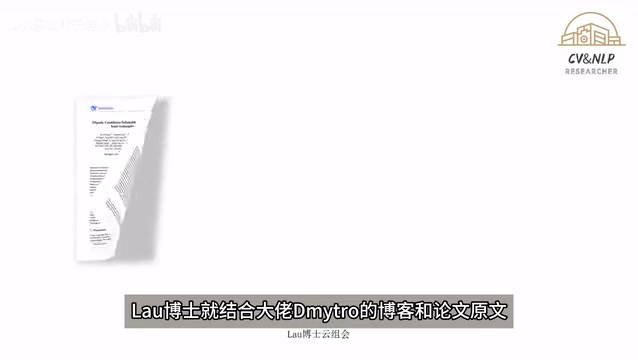
00:00:19–00:00:23 · 画面 00700:00:23–00:00:24 · 画面 008
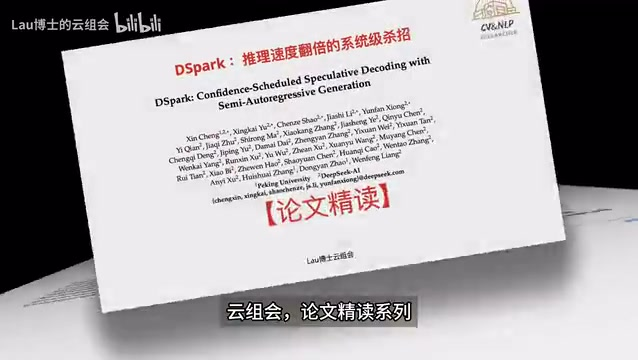
00:00:23–00:00:24 · 画面 00800:00:24–00:00:28 · 画面 009
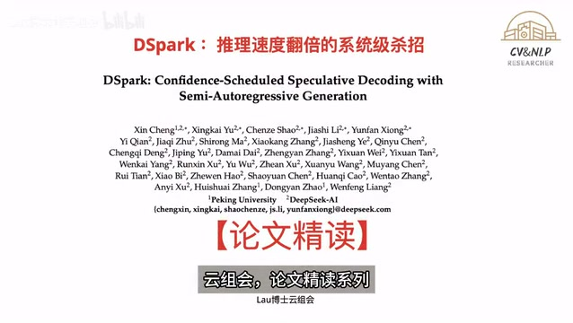
00:00:24–00:00:28 · 画面 00900:00:28–00:00:32 · 画面 010
00:00:28–00:00:32 · 画面 01000:00:32–00:00:34 · 画面 011
00:00:32–00:00:34 · 画面 01100:00:34–00:00:35 · 画面 012
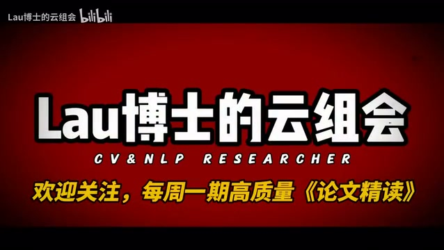
00:00:34–00:00:35 · 画面 01200:00:35–00:00:37 · 画面 013
00:00:35–00:00:37 · 画面 01300:00:37–00:00:40 · 画面 014
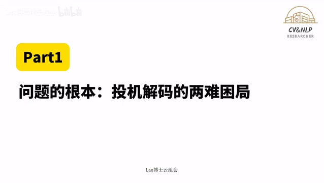
00:00:37–00:00:40 · 画面 014在讲 DSpark 之前，我们先搞明白本文最关键的一个词：投机解码。不少人有个误区，大模型生成慢是因为 GPU 算力不够。
00:00:40–00:00:41 · 画面 015
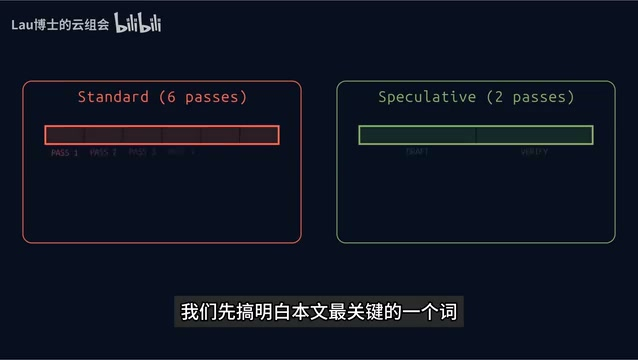
00:00:40–00:00:41 · 画面 01500:00:41–00:00:43 · 画面 016
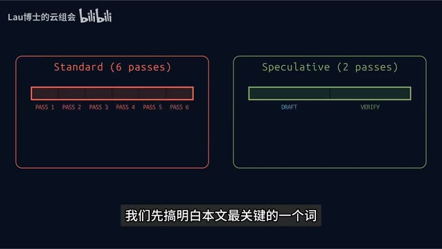
00:00:41–00:00:43 · 画面 01600:00:43–00:00:45 · 画面 017
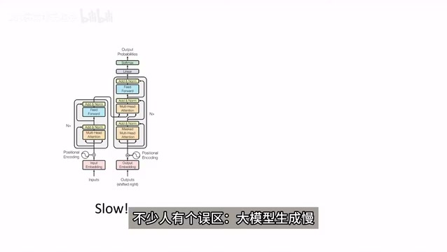
00:00:43–00:00:45 · 画面 01700:00:45–00:00:49 · 画面 018
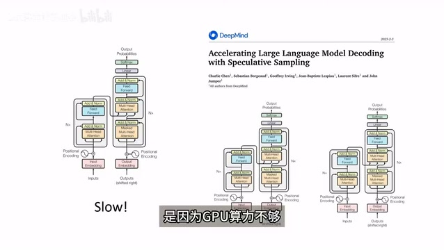
00:00:45–00:00:49 · 画面 018而事实恰恰相反，LM 推理的时候，GPU 的计算单元大部分时间都在摸鱼。真正的瓶颈是显存带宽，每生成一个 Token 都要把整套模型的权重从显存搬到计算单元，90%的时间都花在搬数据上，真正计算的时间少得可怜。理解了这个特性，你就能懂为什么批处理是推理优化的根基。GPU 同时解码 10 个 Token 和解码一个 Token 的成本几乎没区别，而投机解码就是把
00:00:49–00:00:53 · 画面 019
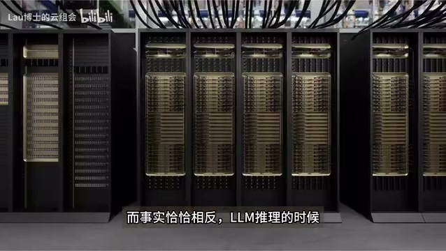
00:00:49–00:00:53 · 画面 01900:00:53–00:00:57 · 画面 020
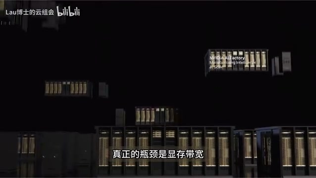
00:00:53–00:00:57 · 画面 02000:00:57–00:00:59 · 画面 021
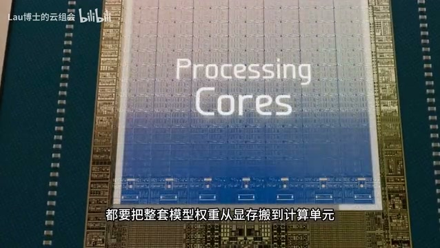
00:00:57–00:00:59 · 画面 02100:00:59–00:01:03 · 画面 022
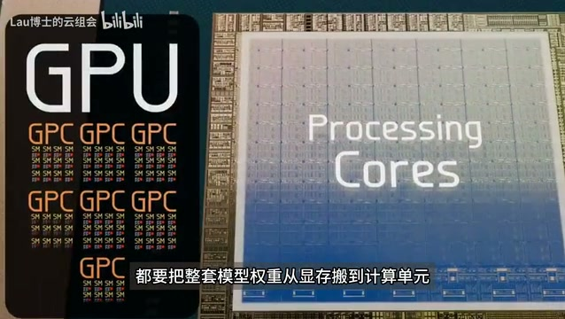
00:00:59–00:01:03 · 画面 02200:01:03–00:01:07 · 画面 023
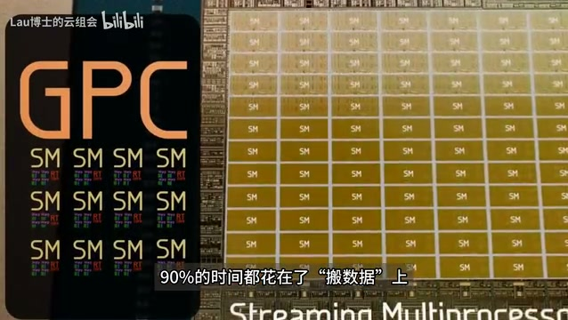
00:01:03–00:01:07 · 画面 02300:01:07–00:01:11 · 画面 024
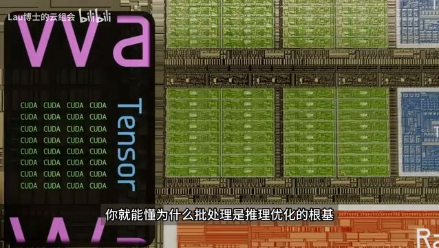
00:01:07–00:01:11 · 画面 02400:01:11–00:01:15 · 画面 025
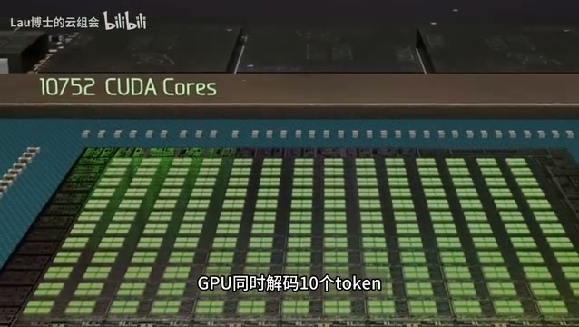
00:01:11–00:01:15 · 画面 02500:01:15–00:01:19 · 画面 026
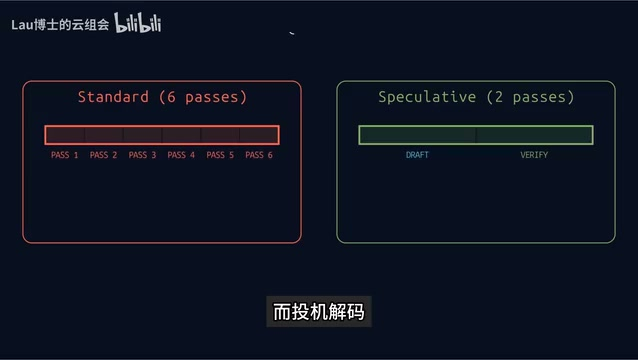
00:01:15–00:01:19 · 画面 026这个特性用到了极致。大模型生成天生是串行的，下一个字必须等上一个字出结果了才能算，但我们可以摇个弯，先用一个草稿模型一口气拆出好几个候选的 Token，再送给大模型一次性验证。只要猜得准，一步就能跳好几个 Token。另外这里注意，投机解码用的是拒绝采样机制，接受最长的正确前缀，错了就从分歧点重生成。论文里给出了整个投机解码领域的核心公式。
00:01:19–00:01:22 · 画面 027
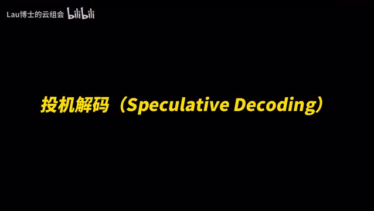
00:01:19–00:01:22 · 画面 02700:01:22–00:01:26 · 画面 028
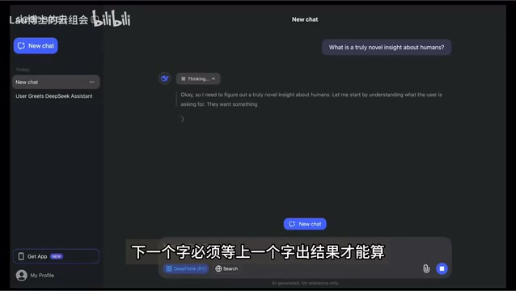
00:01:22–00:01:26 · 画面 02800:01:26–00:01:27 · 画面 029
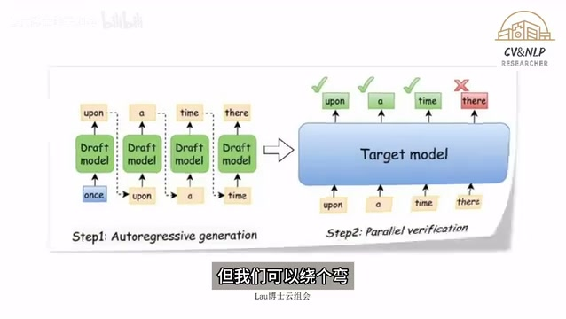
00:01:26–00:01:27 · 画面 02900:01:27–00:01:28 · 画面 030
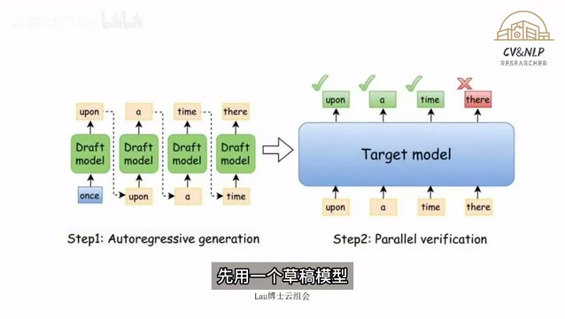
00:01:27–00:01:28 · 画面 03000:01:28–00:01:29 · 画面 031
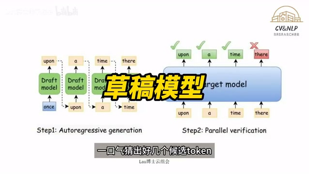
00:01:28–00:01:29 · 画面 03100:01:29–00:01:33 · 画面 032
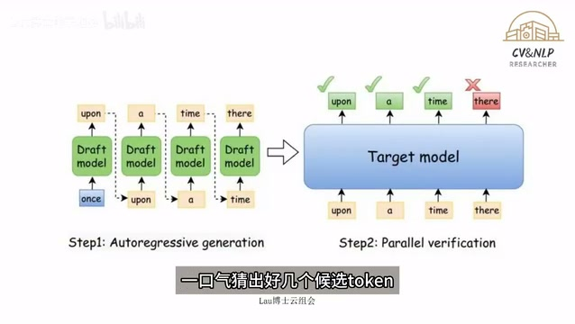
00:01:29–00:01:33 · 画面 03200:01:33–00:01:34 · 画面 033
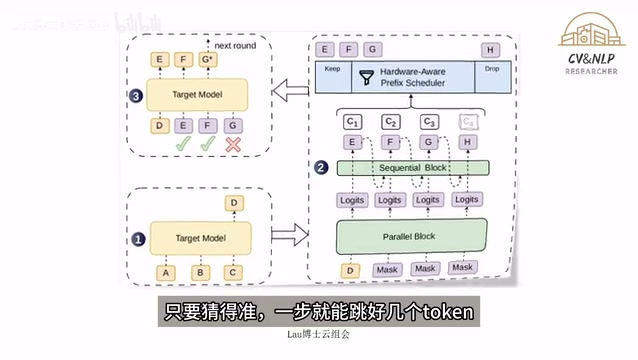
00:01:33–00:01:34 · 画面 03300:01:34–00:01:36 · 画面 034
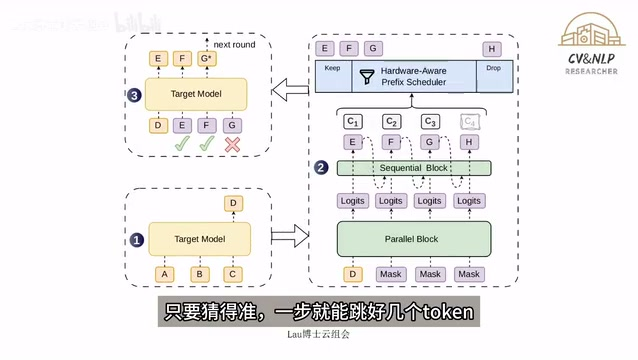
00:01:34–00:01:36 · 画面 03400:01:36–00:01:39 · 画面 035
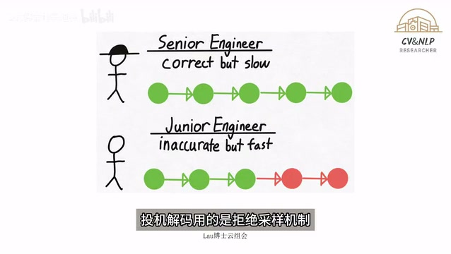
00:01:36–00:01:39 · 画面 03500:01:39–00:01:42 · 画面 036
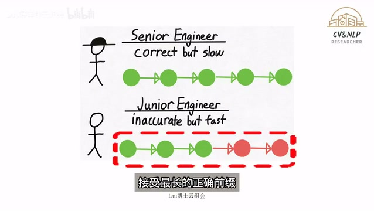
00:01:39–00:01:42 · 画面 03600:01:42–00:01:44 · 画面 037
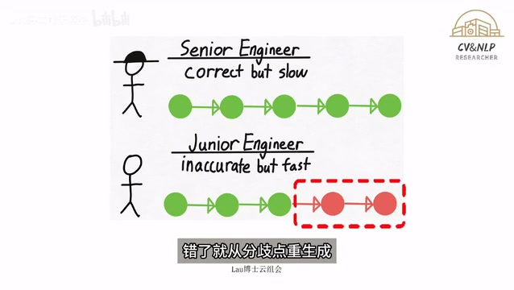
00:01:42–00:01:44 · 画面 03700:01:44–00:01:49 · 画面 038
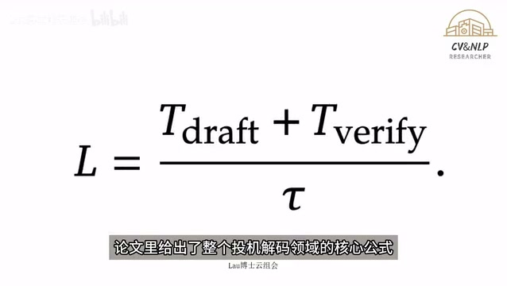
00:01:44–00:01:49 · 画面 038同时也是优化指标当 Token 的实际延迟等于草稿生成的耗时加验证耗时的和除以被接受的 Token 数 TAO 说白了给它提数就三条 1.猜得更快 2.猜得更准 3.验得更快而 DSpark 整篇论文就是同时拉动这三根杠杆做了一次全链路的系统性优化
00:01:49–00:01:51 · 画面 039
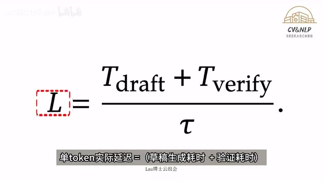
00:01:49–00:01:51 · 画面 03900:01:51–00:01:54 · 画面 040
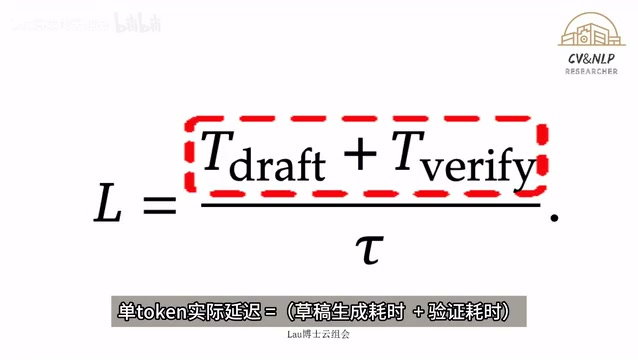
00:01:51–00:01:54 · 画面 04000:01:54–00:01:56 · 画面 041
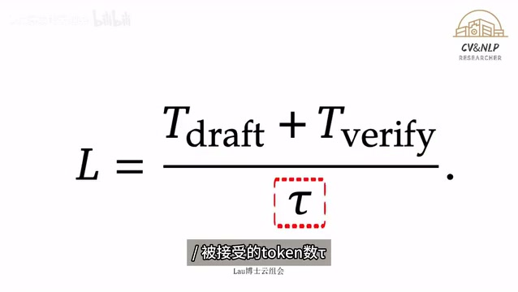
00:01:54–00:01:56 · 画面 04100:01:56–00:02:00 · 画面 042
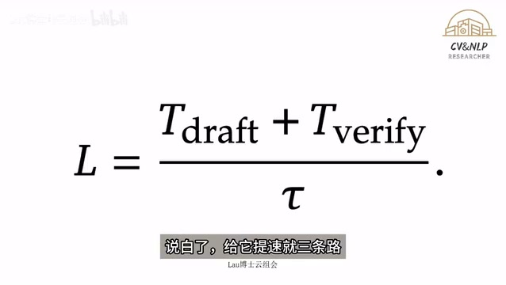
00:01:56–00:02:00 · 画面 04200:02:00–00:02:03 · 画面 043
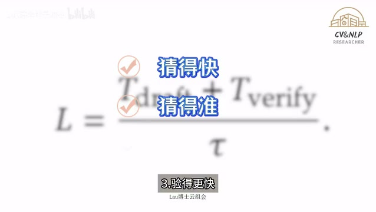
00:02:00–00:02:03 · 画面 04300:02:03–00:02:08 · 画面 044
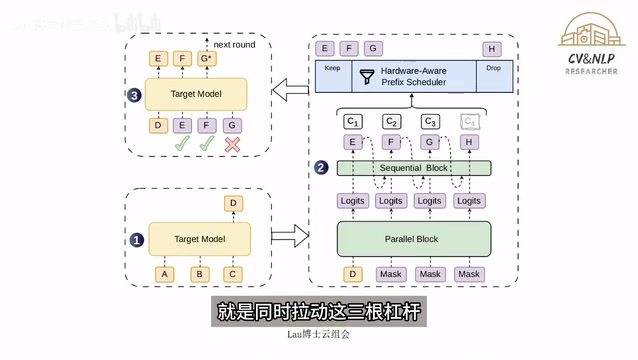
00:02:03–00:02:08 · 画面 04400:02:08–00:02:09 · 画面 045
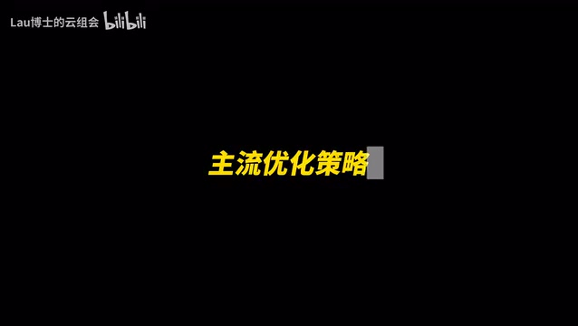
00:02:08–00:02:09 · 画面 04500:02:09–00:02:12 · 画面 046
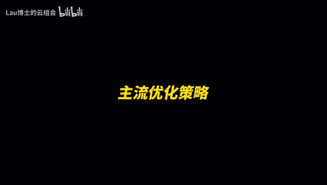
00:02:09–00:02:12 · 画面 046在 DSpark 之前，行业里有两条主流的路线，但各有各的缺点。第一条是自回归草稿，代表是 EAGLE-3 MTP。
00:02:12–00:02:16 · 画面 047
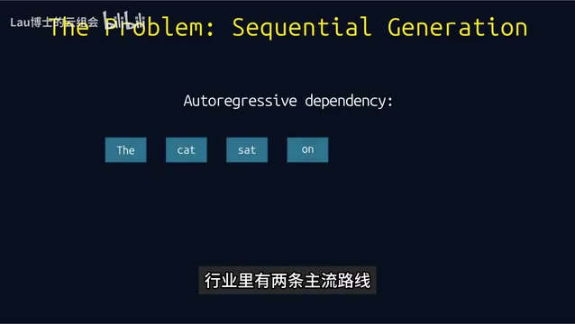
00:02:12–00:02:16 · 画面 04700:02:16–00:02:20 · 画面 048
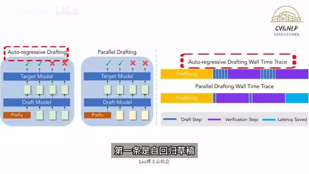
00:02:16–00:02:20 · 画面 048它不单迅小模型直接复用大模型的隐藏层状态，叠一到两层头当草稿器。好处是拆得准，坏处是 N 个 Token 就要串行跑 N 步，草稿的耗时随长度线性上涨。想拆长一点就会把省下来的时间又吃回去。DeepSeek 之前线上用的生产基线 MTP1 就是这个路线。说到这里，本次 DSpark 论文中所有的提速数据都是在 MTP1 这个已经优化过的基线上再叠加的。
00:02:20–00:02:22 · 画面 049
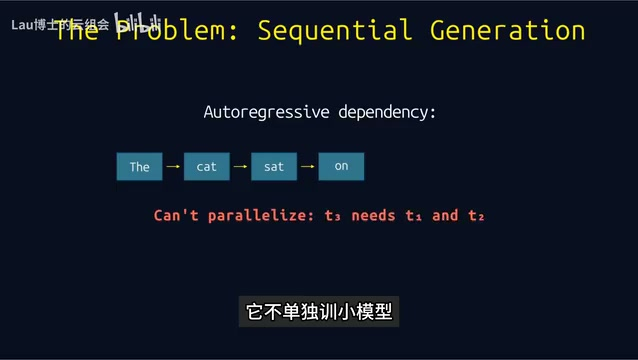
00:02:20–00:02:22 · 画面 04900:02:22–00:02:25 · 画面 050
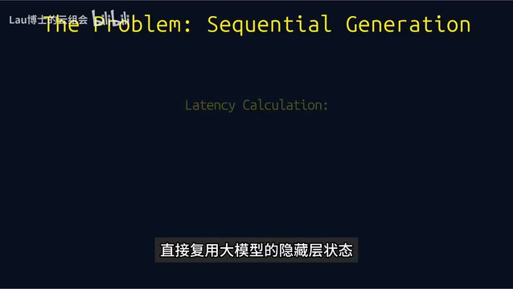
00:02:22–00:02:25 · 画面 05000:02:25–00:02:29 · 画面 051
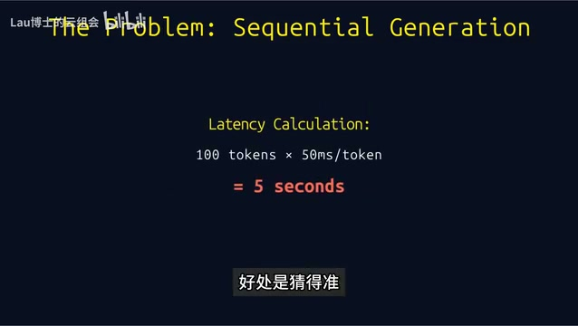
00:02:25–00:02:29 · 画面 05100:02:29–00:02:31 · 画面 052
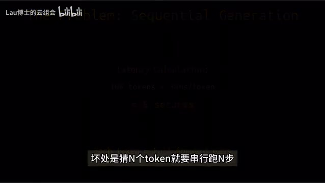
00:02:29–00:02:31 · 画面 05200:02:31–00:02:34 · 画面 053
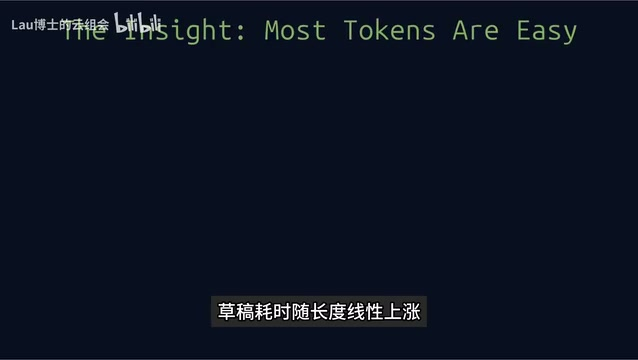
00:02:31–00:02:34 · 画面 05300:02:34–00:02:36 · 画面 054
00:02:34–00:02:36 · 画面 05400:02:36–00:02:43 · 画面 055
00:02:36–00:02:43 · 画面 05500:02:43–00:02:44 · 画面 056
00:02:43–00:02:44 · 画面 05600:02:44–00:02:47 · 画面 057
00:02:44–00:02:47 · 画面 05700:02:47–00:02:48 · 画面 058
00:02:47–00:02:48 · 画面 058不是和原生的自回归比，含金量非常足。第二条是并行草稿，代表的是 DFlash。它借鉴了扩散模型的思路，通过注入目标模型的多层上下文特征，一次前向传播直接生成了所有候选 Token。草稿的耗时几乎和长度无关，速度拉满，但代价也很致密。每个位置的 Token 是独立预测的，互相之间没有依赖关系，经常出现 Of Problem 这种搭配不通的情况，越靠后的位置错的越离谱。
00:02:48–00:02:49 · 画面 059
00:02:48–00:02:49 · 画面 05900:02:49–00:02:52 · 画面 060
00:02:49–00:02:52 · 画面 06000:02:52–00:02:53 · 画面 061
00:02:52–00:02:53 · 画面 06100:02:53–00:02:57 · 画面 062
00:02:53–00:02:57 · 画面 06200:02:57–00:03:01 · 画面 063
00:02:57–00:03:01 · 画面 06300:03:01–00:03:05 · 画面 064
00:03:01–00:03:05 · 画面 06400:03:05–00:03:09 · 画面 065
00:03:05–00:03:09 · 画面 06500:03:09–00:03:10 · 画面 066
00:03:09–00:03:10 · 画面 06600:03:10–00:03:12 · 画面 067
00:03:10–00:03:12 · 画面 06700:03:12–00:03:15 · 画面 068
00:03:12–00:03:15 · 画面 06800:03:15–00:03:24 · 画面 069
00:03:15–00:03:24 · 画面 069接受率断崖式下降，也就是所谓的后缀衰减。一个准而慢，一个快而不准，这就是投机解码的经典两难。而 DSpark 的答案是我全都要。
00:03:24–00:03:28 · 画面 070
00:03:24–00:03:28 · 画面 07000:03:28–00:03:29 · 画面 071
00:03:28–00:03:29 · 画面 071DSpark 的第一个核心创新就是半自回归生成架构。什么是半自回归？这里思路非常直白：一用并行的骨干打底保速度，二加一个极轻的串行头，不准确率各取所长。具体分两步骤：第一步用 DFlash 当并行骨干，一次前向传播输出所有位置的基础 logits，把速度的优势牢牢赚注。第二步用一个轻量级串行模块
00:03:29–00:03:36 · 画面 072
00:03:29–00:03:36 · 画面 07200:03:36–00:03:37 · 画面 073
00:03:36–00:03:37 · 画面 07300:03:37–00:03:39 · 画面 074
00:03:37–00:03:39 · 画面 07400:03:39–00:03:43 · 画面 075
00:03:39–00:03:43 · 画面 07500:03:43–00:03:47 · 画面 076
00:03:43–00:03:47 · 画面 07600:03:47–00:03:51 · 画面 077
00:03:47–00:03:51 · 画面 07700:03:51–00:03:52 · 画面 078
00:03:51–00:03:52 · 画面 07800:03:52–00:03:57 · 画面 079
00:03:52–00:03:57 · 画面 079从前往后逐个位置注入前缀依赖偏置修正每个位置的概率分布最终每个位置的概率等于并行骨干基础结果加上偏置再做归一化是不是有点懵我们来举个具体的例子假设并行的骨干独立预测第一个位置出 of 第二个位置出 problem
00:03:57–00:03:58 · 画面 080
00:03:57–00:03:58 · 画面 08000:03:58–00:04:01 · 画面 081
00:03:58–00:04:01 · 画面 08100:04:01–00:04:05 · 画面 082
00:04:01–00:04:05 · 画面 08200:04:05–00:04:09 · 画面 083
00:04:05–00:04:09 · 画面 08300:04:09–00:04:11 · 画面 084
00:04:09–00:04:11 · 画面 08400:04:11–00:04:13 · 画面 085
00:04:11–00:04:13 · 画面 08500:04:13–00:04:14 · 画面 086
00:04:13–00:04:14 · 画面 086单看都合理拼起来就不对而串行头看到第一个位置真的采样出了 of 立刻把第二个位置的概率往 course 上掰把 problem 的概率压下去有个纠错的机制我们来看效果对比逐位置的条件接受率曲线自回归的 EAGLE-3 起点低但尾部平稳并行的 DFlash 起点很高
00:04:14–00:04:18 · 画面 087
00:04:14–00:04:18 · 画面 08700:04:18–00:04:20 · 画面 088
00:04:18–00:04:20 · 画面 08800:04:20–00:04:23 · 画面 089
00:04:20–00:04:23 · 画面 08900:04:23–00:04:26 · 画面 090
00:04:23–00:04:26 · 画面 09000:04:26–00:04:28 · 画面 091
00:04:26–00:04:28 · 画面 09100:04:28–00:04:30 · 画面 092
00:04:28–00:04:30 · 画面 09200:04:30–00:04:32 · 画面 093
00:04:30–00:04:32 · 画面 09300:04:32–00:04:33 · 画面 094
00:04:32–00:04:33 · 画面 09400:04:33–00:04:36 · 画面 095
00:04:33–00:04:36 · 画面 095但越往后掉的越快，而 DSpark 继承了并行方案的高起点，同时后半段几乎没有明显的衰减，完美的融合了两者的优势。离线测试数据更直观，DSpark 的平均接受长度比 EAGLE-3 高 26%到 31%比 DFlash 高 16%到 18%更夸张的是，两层的 DSpark 效果就能打过五层的 DFlash。同学们，加一点点轻量的创新依赖
00:04:36–00:04:37 · 画面 096
00:04:36–00:04:37 · 画面 09600:04:37–00:04:42 · 画面 097
00:04:37–00:04:42 · 画面 09700:04:42–00:04:43 · 画面 098
00:04:42–00:04:43 · 画面 09800:04:43–00:04:45 · 画面 099
00:04:43–00:04:45 · 画面 09900:04:45–00:04:48 · 画面 100
00:04:45–00:04:48 · 画面 10000:04:48–00:04:49 · 画面 101
00:04:48–00:04:49 · 画面 10100:04:49–00:04:52 · 画面 102
00:04:49–00:04:52 · 画面 10200:04:52–00:04:56 · 画面 103
00:04:52–00:04:56 · 画面 10300:04:56–00:04:59 · 画面 104
00:04:56–00:04:59 · 画面 10400:04:59–00:05:09 · 画面 105
00:04:59–00:05:09 · 画面 105比单成堆并行骨干的成熟性价比高太多了同学们这个设计思路大家觉得能打几分呢?
00:05:09–00:05:10 · 画面 106
00:05:09–00:05:10 · 画面 10600:05:10–00:05:11 · 画面 107
00:05:10–00:05:11 · 画面 107草稿质量提上去了，只是第一步。真正拉开生产落地差距的是第二件事：怎么验证才不浪费算力。绝大多数的投机解码方案都是固定一个草稿长度，比如每次都拆 4 个或者 8 个。但真实的生产环境根本不是这么回事。一来不同的任务差太远了，代码生成无法固定拆 8 个都能权重开放，式聊天不确定性大拆 4 个
00:05:11–00:05:21 · 画面 108
00:05:11–00:05:21 · 画面 10800:05:21–00:05:22 · 画面 109
00:05:21–00:05:22 · 画面 10900:05:22–00:05:23 · 画面 110
00:05:22–00:05:23 · 画面 11000:05:23–00:05:28 · 画面 111
00:05:23–00:05:28 · 画面 11100:05:28–00:05:32 · 画面 112
00:05:28–00:05:32 · 画面 11200:05:32–00:05:34 · 画面 113
00:05:32–00:05:34 · 画面 11300:05:34–00:05:38 · 画面 114
00:05:34–00:05:38 · 画面 114不可能翻车。用固定的长度要么算力白扔，要么加速吃不满。二来服务器的负载是会变的，GPU 闲的时候多拆几个反正算力闲着，高并发的时候每一块 batch 的资源都金贵，拿去验证大概率会错的 Token 就是在抢其他用户的资源。而 DSpark 用三步轻松解决了上面的问题。
00:05:38–00:05:42 · 画面 115
00:05:38–00:05:42 · 画面 11500:05:42–00:05:46 · 画面 116
00:05:42–00:05:46 · 画面 11600:05:46–00:05:50 · 画面 117
00:05:46–00:05:50 · 画面 11700:05:50–00:05:52 · 画面 118
00:05:50–00:05:52 · 画面 11800:05:52–00:05:56 · 画面 119
00:05:52–00:05:56 · 画面 11900:05:56–00:05:57 · 画面 120
00:05:56–00:05:57 · 画面 120DSpark 给模型额外加了一个置信度头，给每个草稿位置输出一个存活概率。这个分数不是拍脑袋来的，训练的标签是草稿分布和目标分布的总变分距离，数学上和真实接受率严格对应。论文中做了个静态阈值测试，随着置信度值的提高，大量注定会被拒绝的尾部 Token 直接被提前砍掉，整体的接受率稳步上升，尤其是闲聊这类不确定性高的任务。
00:05:57–00:06:02 · 画面 121
00:05:57–00:06:02 · 画面 12100:06:02–00:06:11 · 画面 122
00:06:02–00:06:11 · 画面 12200:06:11–00:06:25 · 画面 123
00:06:11–00:06:25 · 画面 123接收率从 45.7%直接拉到了 95.7%只靠静态阈值还不够必须结合硬件的真实性能 DSpark 会提前测好 GPU 在不同的 batch 大小下的吞吐曲线做成一张成本表
00:06:25–00:06:26 · 画面 124
00:06:25–00:06:26 · 画面 12400:06:26–00:06:30 · 画面 125
00:06:26–00:06:30 · 画面 12500:06:30–00:06:31 · 画面 126
00:06:30–00:06:31 · 画面 12600:06:31–00:06:35 · 画面 127
00:06:31–00:06:35 · 画面 12700:06:35–00:06:57 · 画面 128
00:06:35–00:06:57 · 画面 128调度的时候，把所有请求的所有候选 Token 按存活的概率从高到低全局排序，一个个网验证 Batch。你加每加一个，就算一次系统总吞吐量，直到吞吐量开始下降就立刻停止。最狠的是整套的调度逻辑全在 GPU 内部执行，不需要 CPU 插手，完全没有调度延迟。虽然实现了门槛极高，但 DeepSeek 已经做成了生产级的方案，符合我们对 DeepSeek 的刻板印象。
00:06:57–00:07:01 · 画面 129
00:06:57–00:07:01 · 画面 12900:07:01–00:07:05 · 画面 130
00:07:01–00:07:05 · 画面 13000:07:05–00:07:09 · 画面 131
00:07:05–00:07:09 · 画面 13100:07:09–00:07:10 · 画面 132
00:07:09–00:07:10 · 画面 13200:07:10–00:07:14 · 画面 133
00:07:10–00:07:14 · 画面 133神经网络有个天生的毛病总觉得自己猜的全对输出的概率普遍虚高原始置信度的预期校准误差有 3%到 8%直接用来调度肯定会跑边 DSpark 用了顺序温度缩放做后处理从左到右逐个位置校准累积的存活概率把误差压到 1%左右让分数真正靠谱并且这个校准是完全在线的系统边跑边统计真实的接受度动态的修正阈值
00:07:14–00:07:15 · 画面 134
00:07:14–00:07:15 · 画面 13400:07:15–00:07:17 · 画面 135
00:07:15–00:07:17 · 画面 13500:07:17–00:07:20 · 画面 136
00:07:17–00:07:20 · 画面 13600:07:20–00:07:23 · 画面 137
00:07:20–00:07:23 · 画面 13700:07:23–00:07:28 · 画面 138
00:07:23–00:07:28 · 画面 13800:07:28–00:07:29 · 画面 139
00:07:28–00:07:29 · 画面 13900:07:29–00:07:33 · 画面 140
00:07:29–00:07:33 · 画面 14000:07:33–00:07:35 · 画面 141
00:07:33–00:07:35 · 画面 14100:07:35–00:07:36 · 画面 142
00:07:35–00:07:36 · 画面 14200:07:36–00:07:40 · 画面 143
00:07:36–00:07:40 · 画面 143这段时间代码请求多，就自动放宽；闲聊的请求多，就自动收紧。跑的越久，适配的越好，真正做到了自适应。怎么样，大家觉得这三步优化可以打几分呢？反正我觉得 DeepSeek 真的是工程优化魔王，太恐怖了。
00:07:40–00:07:44 · 画面 144
00:07:40–00:07:44 · 画面 14400:07:44–00:07:48 · 画面 145
00:07:44–00:07:48 · 画面 14500:07:48–00:07:52 · 画面 146
00:07:48–00:07:52 · 画面 14600:07:52–00:07:56 · 画面 147
00:07:52–00:07:56 · 画面 14700:07:56–00:07:58 · 画面 148
00:07:56–00:07:58 · 画面 14800:07:58–00:07:59 · 画面 149
00:07:58–00:07:59 · 画面 149讲完方法了，咱们来看实验结果。首先是离线基准测试，覆盖数学推理、代码生成、日常聊天三大领域，一共 9 个标准数据集。在千问 3 的 4B 、8B 、14B 三个尺寸还有 Gemma 4 、12B 上 DSpark。
00:07:59–00:08:03 · 画面 150
00:07:59–00:08:03 · 画面 15000:08:03–00:08:04 · 画面 151
00:08:03–00:08:04 · 画面 15100:08:04–00:08:07 · 画面 152
00:08:04–00:08:07 · 画面 15200:08:07–00:08:09 · 画面 153
00:08:07–00:08:09 · 画面 15300:08:09–00:08:13 · 画面 154
00:08:09–00:08:13 · 画面 15400:08:13–00:08:14 · 画面 155
00:08:13–00:08:14 · 画面 155全面碾压 EAGLE-3 和 DFlash 两个基线比如千问山 14B 上红平均接受长度相对 EAGLE-3 提升 30%相对 DFlash 提升 18.3%没有任何短板如果说离线测试是实验室的成绩那线上生产环境的表现才是真金白银的价值 DeepSeek 直接把 DSpark 部署到了 DeepSeek V4 的生产引擎里和正式上线服役的 MTP1 做真实流量对比我们看吞吐量交互速度的
00:08:14–00:08:17 · 画面 156
00:08:14–00:08:17 · 画面 15600:08:17–00:08:20 · 画面 157
00:08:17–00:08:20 · 画面 15700:08:20–00:08:22 · 画面 158
00:08:20–00:08:22 · 画面 15800:08:22–00:08:23 · 画面 159
00:08:22–00:08:23 · 画面 15900:08:23–00:08:25 · 画面 160
00:08:23–00:08:25 · 画面 16000:08:25–00:08:29 · 画面 161
00:08:25–00:08:29 · 画面 16100:08:29–00:08:33 · 画面 162
00:08:29–00:08:33 · 画面 16200:08:33–00:08:37 · 画面 163
00:08:33–00:08:37 · 画面 16300:08:37–00:08:41 · 画面 164
00:08:37–00:08:41 · 画面 16400:08:41–00:08:45 · 画面 165
00:08:41–00:08:45 · 画面 165帕累托前沿图，DSpark 整条曲线都稳稳的在基线外侧。翻译成人话就是，同样的用户生成速度，DSpark 能承载更高的总吞吐量；同样的总并发量，用户能感受到更快的回复速度。具体数字是，同等的吞吐量下，单用户生成速度提升 60%到 85%在严格的低延迟 SLA 要求下，基线已经快扛不住了，DSpark 还能维持稳定的吞吐。
00:08:45–00:08:51 · 画面 166
00:08:45–00:08:51 · 画面 16600:08:51–00:08:52 · 画面 167
00:08:51–00:08:52 · 画面 16700:08:52–00:08:57 · 画面 168
00:08:52–00:08:57 · 画面 16800:08:57–00:08:58 · 画面 169
00:08:57–00:08:58 · 画面 16900:08:58–00:08:59 · 画面 170
00:08:58–00:08:59 · 画面 17000:08:59–00:09:02 · 画面 171
00:08:59–00:09:02 · 画面 17100:09:02–00:09:05 · 画面 172
00:09:02–00:09:05 · 画面 17200:09:05–00:09:10 · 画面 173
00:09:05–00:09:10 · 画面 17300:09:10–00:09:11 · 画面 174
00:09:10–00:09:11 · 画面 174吞吐量优势能达到数倍，直接解锁了以前做不到的高交互服务等级。还有非常能体现系统能力负载的自适应表现，随着并发请求数的上升，调度器会自动缩短每个请求的验证长度，把算力集中在高自信的 token 上。低负载的时候放开用，吃满闲置算力；高负载的时候精准裁减，保住整体的吞吐。全程不用人工调参，系统自己就适配了。
00:09:11–00:09:16 · 画面 175
00:09:11–00:09:16 · 画面 17500:09:16–00:09:17 · 画面 176
00:09:16–00:09:17 · 画面 17600:09:17–00:09:29 · 画面 177
00:09:17–00:09:29 · 画面 17700:09:29–00:09:30 · 画面 178
00:09:29–00:09:30 · 画面 17800:09:30–00:09:35 · 画面 179
00:09:30–00:09:35 · 画面 17900:09:35–00:09:36 · 画面 180
00:09:35–00:09:36 · 画面 18000:09:36–00:09:40 · 画面 181
00:09:36–00:09:40 · 画面 18100:09:40–00:09:41 · 画面 182
00:09:40–00:09:41 · 画面 182最后我们冷静下来聊聊 DSpark 到底带来了什么。拆开看，半自回归置信度打分、动态调度，每个单点技术都算不算全新的学术突破？
00:09:41–00:09:45 · 画面 183
00:09:41–00:09:45 · 画面 18300:09:45–00:09:49 · 画面 184
00:09:45–00:09:49 · 画面 18400:09:49–00:09:50 · 画面 185
00:09:49–00:09:50 · 画面 18500:09:50–00:09:54 · 画面 186
00:09:50–00:09:54 · 画面 186但 DeepSeek 团队把他们整合成了一套完整的能直接上生产的端到端系统，这件事的难度远比发明一个新算法大得多。这其实也是大模型发展到今天的一个信号，单点的技术红利正在收涨，真正的体验跃升来自全链路的系统打磨，每一个环节扣一点，加起来就是巨大的体验差距。诶 ，怎么听起来有点像马斯克的风格了。
00:09:54–00:09:56 · 画面 187
00:09:54–00:09:56 · 画面 18700:09:56–00:10:00 · 画面 188
00:09:56–00:10:00 · 画面 18800:10:00–00:10:04 · 画面 189
00:10:00–00:10:04 · 画面 18900:10:04–00:10:07 · 画面 190
00:10:04–00:10:07 · 画面 19000:10:07–00:10:11 · 画面 191
00:10:07–00:10:11 · 画面 19100:10:11–00:10:15 · 画面 192
00:10:11–00:10:15 · 画面 19200:10:15–00:10:17 · 画面 193
00:10:15–00:10:17 · 画面 193另外 DeepSeek 一如既往的把全栈训练库直接开源了还支持千问 3 Gemma 等外部模型把自己生产级的工具链送给了全行业其他不说了一起给 DeepSeek 点个赞吧好了今天的论文精读就到这里论文的原文和开源仓库链接我都放在简介了感兴趣的同学可以去啃原文欢迎关注我们成为云组会的一员
00:10:17–00:10:22 · 画面 194
00:10:17–00:10:22 · 画面 19400:10:22–00:10:24 · 画面 195
00:10:22–00:10:24 · 画面 19500:10:24–00:10:28 · 画面 196
00:10:24–00:10:28 · 画面 19600:10:28–00:10:32 · 画面 197
00:10:28–00:10:32 · 画面 19700:10:32–00:10:36 · 画面 198
00:10:32–00:10:36 · 画面 19800:10:36–00:10:39 · 画面 199
00:10:36–00:10:39 · 画面 19900:10:39–00:10:39 · 画面 200
00:10:39–00:10:39 · 画面 200转写与来源说明 · 0 个自动复核提示
保留 28 个原始语音片段，0 个片段触发自动复核提示。提示仅用于定位可能的术语、重复或识别问题，不等于已确认错误。
讲解画面为源视频截图（638×360），不是可编辑 PPT 文件。全片按每秒 2 帧扫描内容变化，逐步展开页保留；连续动画保留代表画面。清晰度受源视频限制。
原视频：paper/合集_2026-10-16_论文精读/梁圣亲自挂帅！V4超级Buff全解析！DSpark【论文精读】.mp4
SHA-256：ea96829792b408648134361cf2699d10c718a47a7ee972dd658f95646e2ed125
全文按视频语音与画面制作。原论文可从上方链接下载；完整资料包保留全文、原始逐字稿、字幕和校对记录。